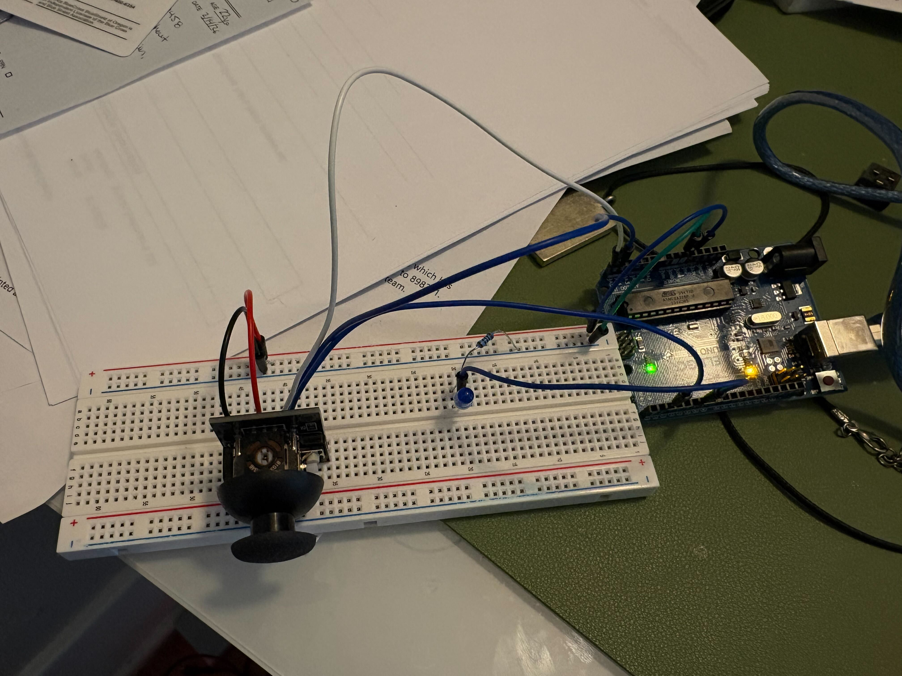
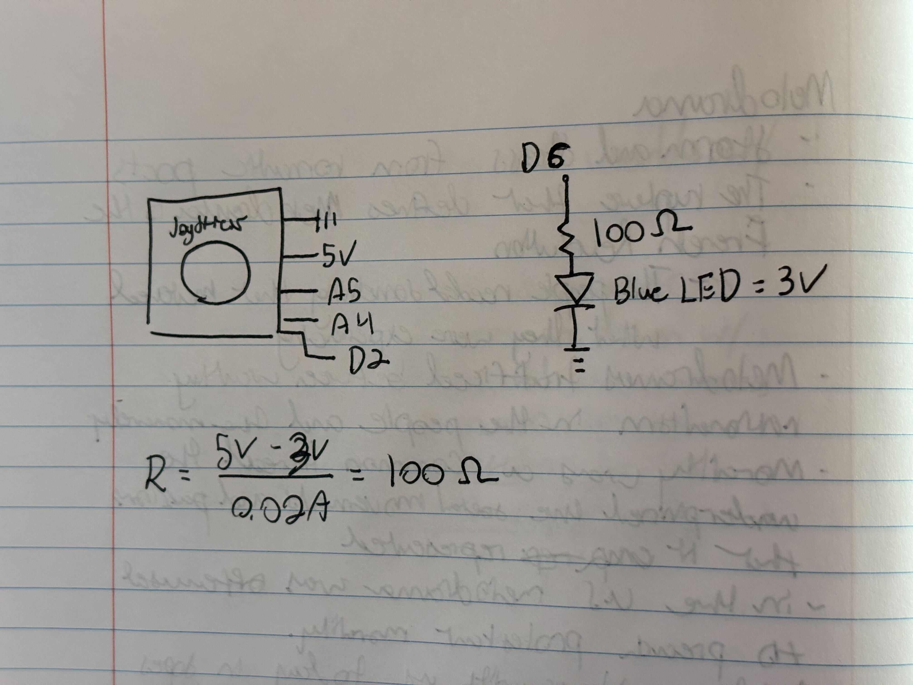

To practice communicating between my computer and arduino, I created a system in which a purple circle moves around a gold box (go dawgs) based on the movements of a joystick. Additionally when the Joystick is pressed, a blue LED lights up. My circut, schematic, and resistance calculation are shown above. Below, find my code with descriptive comments and a video of the system in action.
// Pin number for the LED output
const int ledPin = 6;
// Pin number for the joystick SW input
const int swPin = 2;
void setup()
{
// Start serial communication
Serial.begin(9600);
// Set ledPin as output
pinMode(ledPin, OUTPUT);
// Set swPin as input with internal pull-up resistor
pinMode(swPin, INPUT);
// Set swPin to high because HIGH = unpressed and LOW = pressed in this case
digitalWrite(swPin, HIGH);
}
void loop()
{
// Read the SW button state
int swState = digitalRead(swPin);
// If the button is pressed turn the LED on
if (swState == LOW) {
// Write HIGH to ledPin to turn it on
digitalWrite(ledPin, HIGH);
} else {
// Write LOW to ledPin to turn it off
digitalWrite(ledPin, LOW);
}
// Send joystick Y value from A4, which is wired to VRx becuase the joystick is on its side in the breadboard
Serial.print(analogRead(A4));
// Print a comma to separate Y from X
Serial.print(",");
// Send joystick X value from A5, which is wired to VRy becuase the joystick is on its side in the breadboard
Serial.print(analogRead(A5));
// Print a comma to separate Y from SW
Serial.print(",");
// Send the SW button state
Serial.println(swState);
// Delay 50ms
delay(50);
}
analogRead() in this case reads values from 0-1023 that correspond the the amount of the volatage passing through the joysticks potentiometers.
// Set BAUD Rate
const baudRate = 9600;
// Declare global variables
let port, connectBtn;
// Variables to store the joystick position on screen
let dotX, dotY;
function setup() {
// Create a canvas the size of browser window
createCanvas(windowWidth, windowHeight);
// Run serial setup function
setupSerial();
}
function draw() {
const portIsOpen = checkPort(); // Check whether the port is open
if (!portIsOpen) return; // If the port is not open, exit the draw loop
let str = port.readUntil("\n"); // Read from the port until the newline
if (str.length == 0) return; // If we didn't read anything, return.
let arr = str.trim().split(","); // Trim whitespace and split on commas
// Convert each element to a number and map it to the desired range
dotX = map(Number(arr[0]), 0, 1023, 0, width);
dotY = map(Number(arr[1]), 0, 1023, 0, height);
background(255, 204, 0); // Draw a gold background each frame to clear the previous dot
fill(75, 0, 130); // Color the dot purple
circle(dotX, dotY, 50); // Draw circle using readings
}
function setupSerial() {
port = createSerial(); // Create a new serial port object
// Check to see if there are any ports we have used previously
let usedPorts = usedSerialPorts();
if (usedPorts.length > 0) {
// If there are ports we've used, open the first one
port.open(usedPorts[0], baudRate);
}
// create a connect button
connectBtn = createButton("Connect to Arduino");
connectBtn.position(5, 5); // Position the button in the top left of the screen.
connectBtn.mouseClicked(onConnectButtonClicked); // When the button is clicked, run the onConnectButtonClicked function
}
function checkPort() {
if (!port.opened()) {
// If the port is not open, change button text
connectBtn.html("Connect to Arduino");
// Set background to gray
background("gray");
return false;
} else {
// Otherwise we are connected
connectBtn.html("Disconnect");
return true;
}
}
function onConnectButtonClicked() {
// When the connect button is clicked
if (!port.opened()) {
// If the port is not opened, we open it
port.open(baudRate);
} else {
// Otherwise, we close it!
port.close();
}
}